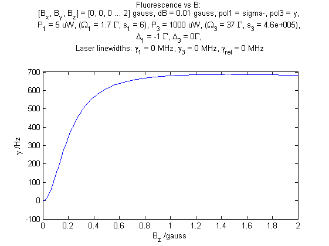
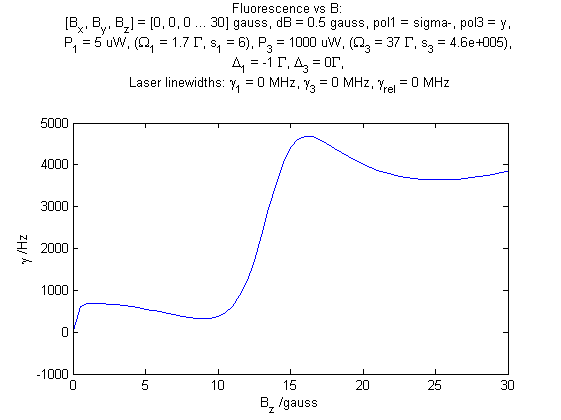
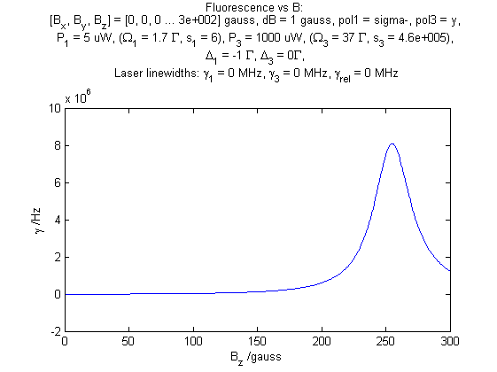

Research notes: June 2013
Table of Contents
Friday 21st
Hanle experiment
10:50 Modulation frequency response logs
I've finally managed to arrange the parameters in the simulation so that we see something like the frequency response observed in the experiment. For these parameters, we see a very fast drop-off of the amplitude of fluorescence modulation as the frequency of B-field modulation on the edge of the Hanle dip is increased above a few kHz.
The parameters were found by copying, as close as possible, the experimental parameters given to me by Kevin, and also by noticing that although he applies a B-field to the experiment this is in order compensate the earth's field and so the effective B-field is roughly zero.
One interesting thing about this set of parameters is that, because the repumper Rabi frequency is so high (~37 Γ), we can see interesting effects at relatively high B-field. I believe this probably has to do with Rabi-splitting of the individual Zeeman sub-levels, but I don't have a clear theoretical picture yet. The effects are shown in three diagrams in the appendix, showing the fluorescence for varying B in low-field, medium-field and high-field regimes.
These diagrams show that apart from what we normally consider the standard `Hanle-dip' feature at low B-field, there are further regions of increasing fluorescence at medium and high B, including a feature larger by orders of magnitude at around 250 gauss.
13:14 Continued Logs
At a guess, what we're seeing here is a very large Rabi splitting from the high power of the 866 - the features seen in the diagram then correspond to 397 resonances between specific Zeeman sub-levels as they are `tuned' by the changing B-field.
If this is the case then we certainly don't expect to see a low frequency cut-off of the response - something that is backed up by simulations showing that the frequency cutoff is much higher (of the order of the decay rate of the P-state) when we modulate the B-field around these features instead of the Hanle dip.
Furthermore, investigations into the parameters in the simulation show that as we reduce the 866 power, the large peak shown in the high B-field diagram is brought down so that it appears at much lower B. This behaviour continues until it overlaps with the Hanle dip effect (NB at this stage I have no good physical explanation of what's happening, but am rather describing things empirically), at roughly Ωre ~ 1 Γ. If we then look at the frequency modulation response we find that although we get a lower drop-off than at high 866 power and B-field, we get a distinctly higher drop-off than around the Hanle dip (low B) at high 866 power.
This is an easy test to put into practice in the experiment, and if it works will greatly enhance the potential for publication of this technique.
15:34 Final note Logs
One final note on this experiment for the moment: Matthias has some explanation of a quantum effect that could limit the frequency response, which I can't remember right now. The upshot was that it could be limited by the energy splitting of the Zeeman sub-levels, but he made some calculations based on Kevin's numbers that indicated that, if it were the case, the cutoff would be at higher frequencies.
It's possible however that Matthias used Kevin's estimates for the total applied field (estimated at between 1 and 10 gauss), forgetting that this applied field is actually used to compensate the magnetic fields inside the trap and that of the earth.
If we use the total magnetic field then we might find indeed that the energy splitting would be larger and expect a higher cut-off frequency. If instead we assume that the field is compensated, and use values of B from our simulation that give us maximum fluorescence sensitivity on the Hanle dip (e.g. 0.15 gauss), we find that this effect could well explain the cut-off observed.
Tuesday 18th
Hanle experiment
16:37 B-field map: 3-dimensions logs
I've changed up the simulation referred to yesterday to include methods for simulating fluorescence change for B-fields that vary in strength in all three dimensions (full 3d here, and planes here).
The ideal situation for this experiment would be such that we could set up the polarisation and B-fields so that the fluorescence would only be sensitive to variations of B in one particular direction. Once mapped, we would then rearrange those parameters so that we could probe the next two directions in turn. If the fluorescence is sensitive to more than one direction at a time, then it becomes difficult to tell anything more than the magnitude of the B-field variations.
I have not yet been able to find a configuration where this kind of response is observed. I think I need to think about how the quantisation axis is defined in this case, and given that, whether or not it is even theoretical possible to create that response.
Monday 17th
Hanle experiment
15:16 Simulating a B-field map logs
As mentioned previously, Matthias has asked me to take another look at the simulation of the Hanle-dip experiment that Kevin performed a long while back. Specifically he wanted to know whether we could simulate a space-varying B-field map, so that we could take fluorescence data from the experiment and create a picture of the magnetic fields in the trap (he also wanted to see if we could simulate the ion's response to a time-varying B-field but I will log details of that when I start working on it in earnest).
I went back to a Matlab simulation I had written whilst the experiment was under way, which calculates the populations of the three states of the lambda-system, but takes into account Zeeman-splitting, laser polarisation and direction and varying B-field (script here and parameters used in the simulation, see appendix for more details).
After debugging a little, I have found the simulation gives reasonable, expected results - low fluorescence at low B-fields and a linear region (where we set the background B-field for the experiment) where we can ideally map fluorescence to local fields.
The question now is, how does varying B-fields in different directions affect the fluorescence, and can we really make a meaningful map out of what we see in the experiment.
Thursday 13th
N2 Photionisation
11:40 Scan analysis Data
The scan taken yesterday finished fine, and I took another in the reverse direction since I had the time. The second is not as nice, perhaps because the power was dropping over time, as it does, or because of the problem with the drifting channeltron voltage.
The data taken shows good agreement with previous scans, and shows an additional line that is predicted by our model - the O4 line (seen to the far right in the model figure). You can also see the splitting in splitting in some branches where lines are close to overlapping (e.g. S4/5 and S1/8).
The better of the two scans is shown below (the second is shown in the appendix), (python-script):
Lines which are not particularly clear in this scan are confirmed in other scans (S2/7, Q5 and O3). The relevant lines are the O3 and P2 with the O3 more likely to be our first target for photoionisation. This path likely leaves us in the N = 1 rotational state of N2+, rather than the originally planned ground state, but the selection rules for this transition are more strongly selective for this state than n the transition to the ground state using P2, according to Matthias.
The signal-to-noise ratio is not as good as expected given an increase in laser power, and there seems to be significant jitter in the wavelength reading. As well, despite the fact that the peaks seem to have a fairly constant height between scans in the calibrations, the signal to noise drifts significantly by the end of the second scan. Regardless of these issues, I'm going to refrain from trying to make any improvements to these issues, until we have some replacement optical elements that are going to be installed in to the laser to improve the power further. Once we have them installed, I'll change the dye and try and get Mike's channeltron preamp working.
Wednesday 12th
N2 Photionisation
15:56 Optimisations and a wide scan Setup
Mike hasn't got back to me about the pre-amp yet. Luckily, I've done some testing on the signal in the meantime, and it seems a lot more stable than in previous scans.
Less positively, the signal does not seem to have improved a huge amount compare the last set of scans, despite the power increasing by about a half.
I have tried to optimise using the channeltron voltage Vch, the discriminator voltage Vdisc, and finally a small amount with the pointing of the laser in the chamber. Optimisations found for the first two were
Vch = 2.9 kV,
Vdisc = 0.20 mV.
This gives a signal of ~270 cps for the Q4 line, with a background of ~80 cps. I was in the middle of optimising the pointing when I realised the power was dropping and decided it would be wise to take a scan before it bottomed out. I noticed at the least that pointing the laser any further down from its current position reduces the signal. So if there's still good power after the scan then I will try and optimise by raising it up.
The scan I'm performing is made with the following parameters
Λ = (474.40 → 474.0) nm,
Δ Λ = 0.001 nm (4000 steps),
Tstep = 10 s,
Ein = 1.5 mJ,
Ethru = 800 uJ,
Pchamber ~ 3E-5 mbar,
Vcap = 4 V,
Vch = 2.9 kV,
Vdisc = 0.2 mV.
Where Λ is the range of wavelengths (N.B. There is an offset from thew wavelength input written here and the one read from the wavemeter, it is roughly 0.1 nm). Δ Λ is the wavelength steps of the scan, Tstep is the time spent taking count rate data at each wavelength, Ein is the pulse energy going into the chamber and Eout is the pulse energy coming out of it, Pchamber is the pressure of N2 in the chamber and Vcap is the voltage on the repeller plate.
Tuesday 11th
N2 Photionisation
16:16 Scan preparations Log
I couldn't go ahead with the scans yesterday because the N2 canister was empty. I don't know how it was emptied, but perhaps its due to one of the many connections it has being leaky. Before the experiment I will re-attach the output so that it is only going to the PI experiment.
Further, while I was waiting, I have set up the autotracker and found that it can scan the full range that we are expecting to see lines over (473.95 nm → 474.30 nm) without significantly changing power.
Mike Hardiman says he's looking about for a pre-amplifier that he used to use for the same channeltrons, and that should help us to get rid of discriminator drift. If that's not here by tomorrow morning I will go ahead and make a scan anyway.
Monday 10th
N2 Photionisation
11:07 Laser optimisation Log
The laser has been attended by a technician and is running at approximately the same power as during the last scans. At around T(q-switch) = (150 → 180) us, the pulse energy of the laser is (1.3 → 1.5) mJ. The beam-profile looks marginally better. I am told that we have ordered replacement prisms (used to separate the fundamental from the frequency doubled light), which should increase the output power to around 2.5 mJ. As mentioned previously, since the photoionisation is a third-order process, the gains from these improvements should be substantial.
I'm going to try taking scans with the current setup. Again ignoring the auto-tracker and instead adjusting the doubling-crystal angle manually approximately every 0.05 nm.
(N.B. It seemed to me, from the behaviour of previous scans, that we could do with improving the stability of the channeltron output signal by adding a preamplifier before the discriminator, but I'm going to hold off on that for the moment just in case the increase in signal that we will see from the above improvements is enough to make this irrelevant.)
Friday 7th
N2 Photoionisation
11:50 Laser optimisation Log
The laser is now being seen to by a technician to try and get it up to its original power (~4 mJ/pulse). This should give us a much bigger signal; since we have a three-photon process the efficiency scales with E3.
11:17 Spectrum data Data
I've cleaned up the spectra taken shown in the entry of the 31st of May. The image below shows the relevant data (data set python script):

Figure 1. Spectrum of N2 photoionisation, and power of the laser as the scan was being taken.
The main difference here is that I have taken away another junk scan that had slipped in, and excluded all count-rate data for which the power on the meter was less than 10 units (on the scale in the plots). This cutoff was necessary because it was distorting spectra significantly as can be seen at the end of the first iteration of the diagram.
Using the paper (N2PI) as a guide, we have been able to positively identify lines from the P, Q and R branch and can speculate that the line that is not shown in the paper (out of scan range) is from the O branch. The terminology in the paper however is fairly tricky, and I'm not sure we've figured out a correct interpretation yet. It's essential that we know exactly what lines we are looking at however, so I have been trying to investigate.
14:00 Comparison with paper, and terminology Analysis
It seems that the convention is that the symbols represent change in total angular momentum including the angular momentum of the electron:
K = Λelectron + Nrot
In this case we would expect that the R0 line represents the `bare' electronic transition frequency, with no adjustments for rotational energy:
NX = 0,
Δ K = +1,
Δ Λ = +1,
→ Na = 0.
Where X and a subscripts refer to the ground and excited states respectively. The additional rotational energy of these states is given by:
Δ Ei = Bi ⋅ N(N+1), [eqn.1]
(i = X, a)
Given these relations we would expect that the spacing of the lines in the R-branch (R0, R1, R2 etc.), would increase quadratically in accordance with the difference of the rotational constants BX and Ba. We also expect that the rotational constant for the excited state should be smaller than that of the ground state, given that the wavefunction is more spread out and therefore has a larger moment of inertia. This should give lines with quadratic spacing, succesively reducing in energy (or increasing in wavelength).
The characteristic of the R-branch in the paper, however, is not like this. Instead the energy spacing first increases, before reaching a turning point between R2 and R3 and then going on to decrease quadratically. By similar arguments to the above, this is the characteristic of a branch of transitions where the rotational number increases by 1 (which, in this terminology and for this transition would be an S-branch).
The paper's Q-branch in fact behaves in the way we would expect the R-branch to behave, or as a Q-branch would behave for an excited state with no electron angular momentum. It doesn't seem likely that the notation is wrong however, since the fact that Q subscripts start at 1 and P subscripts start at 2 are another indication of correct interpretation of the terminology.
16:13 Fitting Analysis
Taking a heuristic approach, we fit the data to a model that takes into account rotational splittings of the two levels according to equation 1 (rotational-splitting). We can then start with either assumption that R-branch or the Q-branch is the Δ N = 0 transition, and see which model fits best.
- Follows an explanation of fitting using the Q-branch (short answer: it didn't work):
Assuming the Q-branch is Δ N = 0, and taking the literature value of the ground state rotational constant (~1.9) we find an excited state rotational constant of ~1.75. Since the Q-branch in the paper only starts at 1 we can either assume that Q0 is disallowed and extrapolate where it would be, or that Q1 is the fundamental transition. Either way we can fit the Q-branch easily to the paper, but then using the calculated value of Ba, we get no agreement with any of the other lines in the paper or our spectrum.
- And using the R-branch (short answer: it kind-of works):

Figure 2. Fit to the N2 photionisation data for low values of K (K < 3). Higher values give a bad fit. The stars represent observed spectral lines.
Using the R0 line as the fundamental electronic transition, we can calculate BX from the energy difference:
Δ E = E(R0) - E(Q1)
Δ E = 2BX.
This gives us a value of BX of ~0.9, which disagrees with the literature value fairly significantly (approx. a factor of 2). Regardless this fits the paper data well for the lines that we have that are only determined by R0 and BX (R0, Q1 and P2).
Similarly, we can calculate a value of Ba from the energy difference of the S0 and R0 branches. This gives us a value of Ba of ~1.9, which clearly goes against the expectation that Ba < BX. Again disregarding the discrepancy, we find that we get a good fit to the S0 line (dependent only on Ba), and additionally it gives us a good fit for lines ending in K=2 of the upper state. Beyond this both the characteristic and the fit is far off.
This fit is shown in Fig. 2 (low-k-fit) (matlab script). There are several fitted lines that match the data, and their allocations also match those of the paper. The lines that have no corresponding data-points do have corresponding lines or allocations in the paper. The data points that don't have corresponding lines have corresponding allocations in the paper, and come from transitions to the excited state with K>2.
To do: Molecule lab
HOLD Photoionisation of N2 Nic Amy
DONE Identify appropriate gnd-state transition
Jack has done most of the work here. Just a case of optimising power etc.
Jack has had to move on to fibre shooting after some trouble with getting a spectrum around the gnd-state transition. I'm going to take over generally, once Matthias has reoptimised the laser and finished baking the chamber (having just replaced the channeltron).
I managed to get a full spectrum on Wednesday and analyse it today. I think we've got the whole series of lines, and I've handed it over to Matthias to see if he can identify the ground state transition from it.
Depending on interpretation of the paper we're using (N2PI), we either have the lines we need or they are a little further to the low energy end of the scale than we currently have. Need help interpreting paper, and will take another longer scan just in case, once the laser is optimised.
O3 transition identified (11:40 Scan analysis).
HOLD Replace damaged optical elements in laser
Waiting on parts
HOLD Build power supply for discriminator preamp
HOLD Re-take spectra with better S-N
HOLD Work on DACs for the new SCL Nic Kevin
HOLD Building boards
- Matthias has the plans:
Pester him for them.
- Received:
Matthias sent them ages ago, but I didn't spot them in my mail. He's still yet to order the actual DACs though, so there's still time. I could make the boards however, in preparation.
- Matthias is making the boards:
Matthias is making the boards, I think it'll just be up to me to program the whole thing.
- Pins used:
Check with Matthias that his design has incorporated these pins as I/Os:
- Port D: RD8 (peak detect input), RD5 (CNinterrupt)
- U2RX pins, unless he's already designed these away
HOLD Programming
- TODO Write SPI library for PIC comms with computer
- TODO Write SPI library for PIC comms with DAC
TODO Code an automation program for experiments Nic Kevin
TODO Fast autocorrelation calculation
[ ] Try using CUDA for a fast autocorrelation calculation |
Maybe first just try using Wolfgang's code. It might just be fast enough on its own.
HOLD Plan out experiment process
Waiting on Keving to collect some data on `phonon-laser' type amplification of the dipole force before we can decide on the exact experimental procedure.
HOLD Describe phonon laser trick in notes
Check if I already have.
Only really required if it turns out to be usable. Waiting on Kevin's results.
TODO Simulations Nic
TODO N2 PI spectrum simulation
Not currently matching for high rotational levels - contact Anthony McCaffery or Tim Softley for advice?
TODO Single ion `heat-engine' effect
Does the oscillation have something to do with a kind of `parametric' excitation from the laser pressure - Perhaps the ion only feels force from the laser when it is at the edges of its oscillation (no Doppler shift).
HOLD One or two calcium ions
Although an extra ion will reduce the acceleration of the crystal due to the dipole force, is the increase in signal a good trade-off?
This question is not important if the `phonon-laser'-like approach we're going to try and take works well. This idea is on hold until more work is done there.
DONE Hanle dip/b-field map simulation
- DONE Fluorescence as a function of B-field for different light pol.
Done for now, need to talk about Matthias about results seen.
- DONE Sanity check: modulation sensitivity reduce at higher B-field?
- DONE B-field modulation frequency response (reduce laser Rabi f.)
Done for now, found a frequency reponse close to that seen in the experiment, but only for very particular regime. I think it's possible that if we move out of that regime we can sidestep this effect - needs experimentation.
To do: General
HOLD Pseudopotential calculations for Oxford
Sent to Laura, awaiting feedback on usage.
HOLD Find submissions for ITCM-Sussex.com
Matthias has reminded us to look through the old website for these.
I should add a scanning cavity lock section to the "Technology" page of the site (extended abstract?).
Furthermore, I think it'd be nice to look over the diagrams that are on there already, and think about whether or not I could make some improved ones in POVRAY.
Rev. Sci. Instrum. 81, 075109 2010:
"We have implemented a compact setup for long-term laser frequency stabilization. Light from a stable reference laser and several slave lasers is coupled into a confocal Fabry–Pérot resonator. By stabilizing the position of the transmission peaks of the slave lasers relative to successive peaks of the master laser as the length of the cavity is scanned over one free spectral range, the long-term stability of the master laser is transferred to the slave lasers.
By using fast analog peak detection and low-latency microcontroller-based digital feedback, with a scanning frequency of 3 kHz, we obtain a feedback bandwidth of 380 Hz and a relative stability of better than 10 kHz at timescales longer than 1 s."
Current undergraduate/masters projects are focused on implementing our scanning cavity lock design with a cheap and feature-rich microcontroller from the dsPIC line (http://www.microchip.com/). Automated impulse-response-function analysis and digital filter generation will provide significant improvements to bandwidth and stability.
- Comments on current webpage:
- There are no sub-titles at the lowest level of the pages when looking at the research interests. e.g. "ion-photon entanglement" is a page inside "cavity-QED", but when you click on it it is title only "cavity-QED".
- Only "charge exchange reactions" in the molecular physics section. Should we show something about our research direction?
- Can we add references to our papers in the "crystal weighing" and "optical excitation" sections?
HOLD Ask Hiroki for a look at the code for cavity mode prop.
Asked Hiroki, but he hasn't finished it yet.
Appendix
Second N2 photoionisation scan
Hanle dip experiment parameters
The file used in the simulation only has what has been derived from the stats Kevin gave me - here are the full set of parameters:
N.B. The x-axis is defined as the trap axis. The y-axis is perpendicular to this in the horizontal plane. The z-axis is the vertical axis. \(\alpha\) is defined as the angle from the x-axis in the horizontal plane, \(\beta\) as the angle away from the horizontal plane.
Lasers
The first two are the main lasers, and to start with I have not included the third in the simulation. The main purpose of it is for radial cooling, and because of its low power and large size, I'm hoping it won't make a big difference.
| wavelength /nm | detuning /MHz | Power /uW | beam diameter /um | α /deg | β /deg | polarisation |
|---|---|---|---|---|---|---|
| 397 | -30 | 5 | 28 | 0 | 0 | σ+ |
| 866 | 0 | 1000 | 145 | 180 | 0 | Y |
| 397 | -30 | 1 | 60 | 85 | 0 | X |
B-field
These are only approximate. I think the y coils actually have different dimensions/separations from the other two, which is why I've made a table that I can fill in appropriately when I have the values. The coils each have \(N=100\) turns.
| axis | separation /mm | diameter /mm | current /mA |
|---|---|---|---|
| x | 140 | 115 | 106.9 |
| y | 140 | 115 | 0 |
| z | 140 | 115 | 16.3 |
Hanle dip regimes
Simulations of ion fluorescence for varying total B-field, using the experimental parameters given to me by Kevin.
Low B-field

Medium B-field

High B-field
